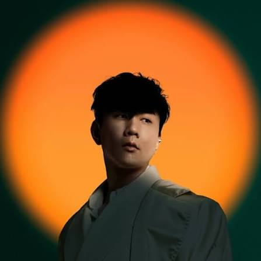
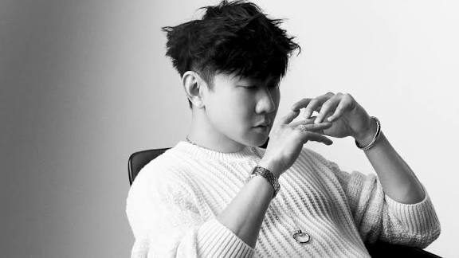

JJ Lin, whose real name is Lin Jun Jie, is a famous Singaporean singer, songwriter, and music producer. He was born on March 27, 1981, in Singapore. JJ Lin started his music career in 2003 and became popular in Asia because of his unique voice and emotional songs. He has released many successful albums and received numerous music awards throughout his career. Besides singing, he also writes and produces his own music. His songs are mainly in Mandarin, and many of them are loved by fans around the world. JJ Lin is known for his talent, hard work, and passion for music. He continues to create music and perform for his fans internationally.